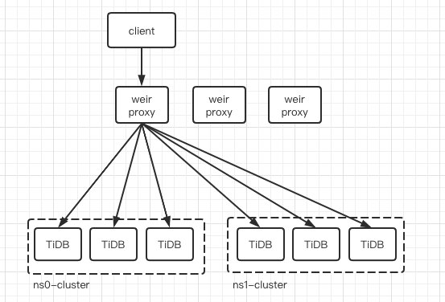

多租户软隔离
Weir作为TiDB分布式数据库的统一接入层和治理平台, 需要具备一定的多租户管理能力, 我们将Weir设计成一个共享多租户系统.
基本概念
在Weir系统中使用Namespace表示租户. 每个Weir集群可以管理多个Namespace, 每个Namespace有其独立管理的用户 (User) 和资源配置参数. Namespace中的资源主要是指TiDB集群的访问能力.
在Weir集群中, User名称是全局唯一的. 每个User只属于一个Namespace, 每个Namespace可以有多个User. 这样便于在客户端连接Weir Proxy时, 根据MySQL的Username找到其Namespace, 从而确定该User的一些访问权限, 如可访问Database, 访问IP等.
软隔离
多个Namespace关联的TiDB集群可以是相同也可以不同, 但Weir Proxy会为每个Namespace创建该TiDB集群的后端连接池, 在后端数据库连接层面将各个Namespace软隔离, 在一定程度上使各个Namespace对同一集群的访问互相不受影响.

各个Namespace可以独立动态加载, 可以动态调整Namespace配置的各项参数, Namespace重新加载时会初始化资源, 并将原有Namespace的资源回收.